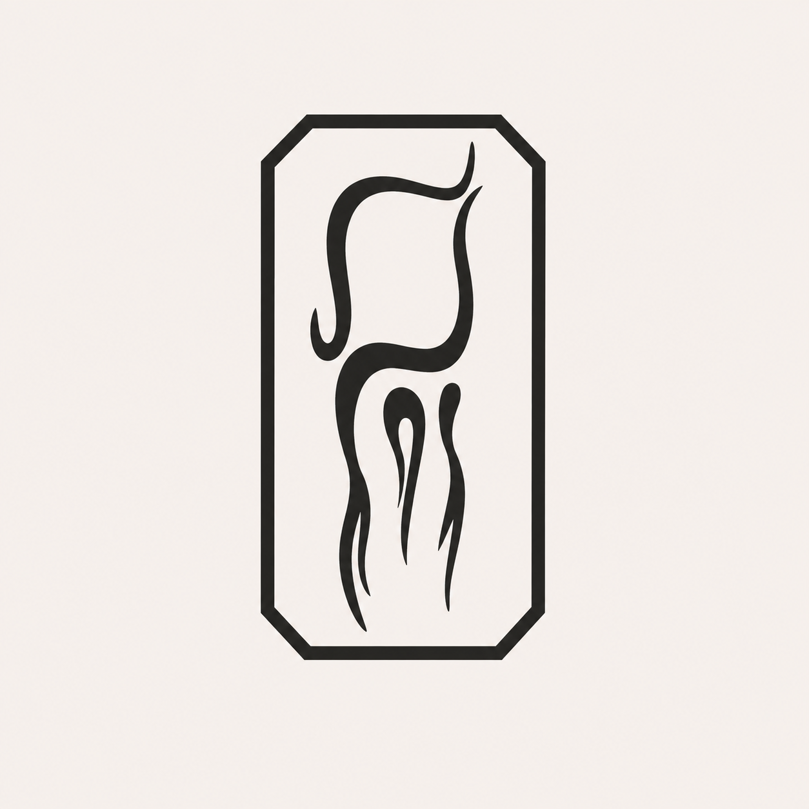

Handmade Calwen
Handmade Calwen nevznikl jako plán. Vznikl náhodou.
Před lety jsem dostala do rukou kus kůže od nejlepšího přítele. V té době jsem se pohybovala mezi LARP hráči a jedním z typických kousků výbavy byla taštice – malá závěsná brašna na opasek.
Tak jsem ji vyrobila.
Bez nákresu. Bez zkušeností. Bez znalosti sedlářského stehu, hranořízku nebo správných nástrojů. Jen podle představy, jak by měla vypadat.
Místo klasického zapínání posloužil přívěsek Thorova kladiva a šití nahradil kožený řemínek.
A ono to fungovalo.
Reakce okolí mě překvapila. Začaly přicházet další nápady, první zakázky a projekty pro lidi, které jsem chtěla potěšit.
Dnes moje dílna zabírá polovinu pokoje. Pracuji s akrylovými barvami, airbrushem, raznicemi i nástroji pro ruční zdobení kůže.
Každý výrobek vzniká pomalu a ručně. Každý steh, každý reliéf i každá tečka do kůže projde mýma rukama.